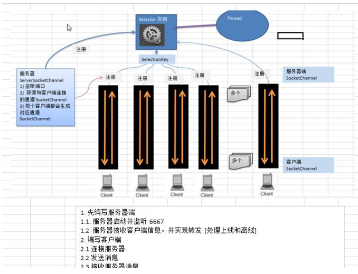

使用NIO实现的群聊系统，多写代码才能灵活运用。
架构

服务器
就是一个监听、接收、转发、显示的功能。
属性
在NIO编程中，最核心的是buffer、channel、selector（最关键），但是buffer往往是需要读写了才开辟出缓冲buffer。所以可以析取的是channel和selector。
构造器
GroupChatServer()初始化中一般要申请各类需要的资源，服务器上层是有一个线程维护着selector，中间有ServerSocketChannel，下层才是各类连接。所以channel要向上注册到selector，向下要绑定端口等待连接。
监听
listen()持续服务用循环监听来体现。虽然连接是和ServerSocketChannel连接，但由于注册到selector的关系，最先感知到连接的是selector，调用select得到连接。selector中有SelectionKey可以获取到当前有事件的通道。注意新建连接哦！ServerSocketChannel不会帮你建立SocketChannel，而是你自己建立
读数据
readData(SelectionKey key)SelectionKey中可以直接获取通道，通道没有空间，通道只有借助buffer来实现自己的存储，所以新建一个buffer来帮自己read
转发数据
sendInfoToOtherClients(String msg, SocketChannel channel)转发也不难了，遍历所有的SelectionKey，直接将数据写入到由各个SelectionKey得到的通道中即可。
客户端
客户端的逻辑更加简单，只需要读和写即可
属性
构造器
GroupChatClient()客户端也并不需要再来一套完整的NIO体系了。selector.open只是服务器的selector，channel需要socketChannel（记得绑定和注册）
读
readInfo()就对一开始的selector进行遍历Key，得到通道，用buffer读。
写
sendInfo(String info)直接向通道中写就行了，都不需要selector参与。
实现
服务器
package uestc.zhangkx.nio.groupChat;
import java.io.IOException;
import java.net.InetSocketAddress;
import java.nio.ByteBuffer;
import java.nio.channels.*;
import java.util.Iterator;
/**
* 群聊系统groupChat
* 服务器端
*
* @author zhangkx
* @version 1.0
* @date 2020/10/12 17:00
*/
public class GroupChatServer {
//定义相关属性
private Selector selector;
private ServerSocketChannel listenChannel;
private static final int PORT = 6667;
/**
* 初始化构造器（各种资源的申请）
*/
public GroupChatServer() {
try {
//得到选择器
selector = Selector.open();
//得到serverSocketChannel
listenChannel = ServerSocketChannel.open();
//绑定
listenChannel.bind(new InetSocketAddress(PORT));
//设置非阻塞
listenChannel.configureBlocking(false);
//将listenChannel注册
listenChannel.register(selector, SelectionKey.OP_ACCEPT);
} catch (IOException e) {
e.printStackTrace();
}
}
private void listen() {
System.out.println("监听线程：" + Thread.currentThread().getName());
try {
while (true) {
int count = selector.select();
if (count > 0) {
Iterator<SelectionKey> iterator = selector.selectedKeys().iterator();
while (iterator.hasNext()) {
SelectionKey key = iterator.next();
if (key.isAcceptable()) {
SocketChannel socketChannel = listenChannel.accept();
socketChannel.configureBlocking(false);
socketChannel.register(selector, SelectionKey.OP_READ);
System.out.println(socketChannel.getRemoteAddress() + "上线");
}
if (key.isReadable()) {
readData(key);
}
iterator.remove();
}
} else {
System.out.println("等待...");
}
}
} catch (IOException e) {
e.printStackTrace();
} finally {
//异常处理
}
}
private void readData(SelectionKey key) {
SocketChannel channel = null;
try{
channel = (SocketChannel) key.channel();
ByteBuffer byteBuffer = ByteBuffer.allocate(1024);
int read = channel.read(byteBuffer);
if (read>0){
String msg = new String(byteBuffer.array());
System.out.println("form 客户端"+msg);
sendInfoToOtherClients(msg,channel);
}
} catch (IOException e) {
try {
System.out.println(channel.getRemoteAddress()+"离线了");
key.cancel();
channel.close();
} catch (IOException ioException) {
ioException.printStackTrace();
}
}
}
private void sendInfoToOtherClients(String msg, SocketChannel channel) {
System.out.println("服务器消息转发中...");
System.out.println("服务器消息转发数据给客户端线程:"+ Thread.currentThread().getName());
selector.keys().stream().forEach(key->{
Channel targetChannel = key.channel();
if (targetChannel instanceof SocketChannel && targetChannel != channel){
SocketChannel dest = (SocketChannel)targetChannel;
ByteBuffer buffer = ByteBuffer.wrap(msg.getBytes());
try {
dest.write(buffer);
} catch (IOException e) {
e.printStackTrace();
}
}
});
}
public static void main(String[] args) {
new GroupChatServer().listen();
}
}客户端
package uestc.zhangkx.nio.groupChat;
import java.io.IOException;
import java.net.InetSocketAddress;
import java.nio.ByteBuffer;
import java.nio.channels.SelectionKey;
import java.nio.channels.Selector;
import java.nio.channels.SocketChannel;
import java.util.Scanner;
/**
* 群聊系统groupChat
* 客户端
*
* @author zhangkx
* @version 1.0
* @date 2020/10/12 19:10
*/
public class GroupChatClient {
private final String HOST = "127.0.0.1";
private final int PORT = 6667;
private Selector selector;
private SocketChannel socketChannel;
private String username;
public GroupChatClient() throws IOException {
selector = Selector.open();
socketChannel = socketChannel.open(new InetSocketAddress("127.0.0.1", PORT));
socketChannel.configureBlocking(false);
socketChannel.register(selector, SelectionKey.OP_READ);
username = socketChannel.getLocalAddress().toString().substring(1);
System.out.println(username + " is ok...");
}
public void sendInfo(String info){
info = username + "说" + info;
try {
socketChannel.write(ByteBuffer.wrap(info.getBytes()));
} catch (IOException e) {
e.printStackTrace();
}
}
public void readInfo(){
try {
int readChannels = selector.select();
if (readChannels>0){
selector.selectedKeys().stream().forEach(key->{
if (key.isReadable()){
SocketChannel socketChannel =(SocketChannel) key.channel();
ByteBuffer buffer = ByteBuffer.allocate(1024);
try {
socketChannel.read(buffer);
System.out.println(new String(buffer.array()).trim());
} catch (IOException e) {
e.printStackTrace();
}
}
});
}
} catch (IOException e) {
e.printStackTrace();
}
}
public static void main(String[] args) throws Exception {
GroupChatClient chatClient = new GroupChatClient();
//启动一个线程, 每个3秒，读取从服务器发送数据
new Thread() {
public void run() {
while (true) {
chatClient.readInfo();
try {
Thread.currentThread().sleep(3000);
}catch (InterruptedException e) {
e.printStackTrace();
}
}
}
}.start();
//发送数据给服务器端
Scanner scanner = new Scanner(System.in);
while (scanner.hasNextLine()) {
String s = scanner.nextLine();
chatClient.sendInfo(s);
}
}
}